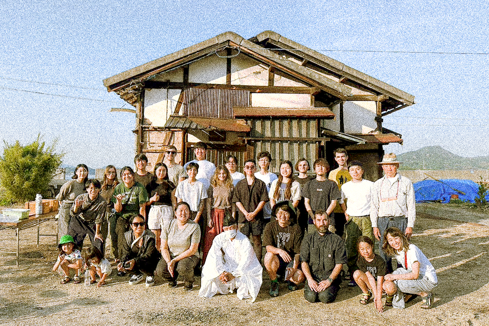
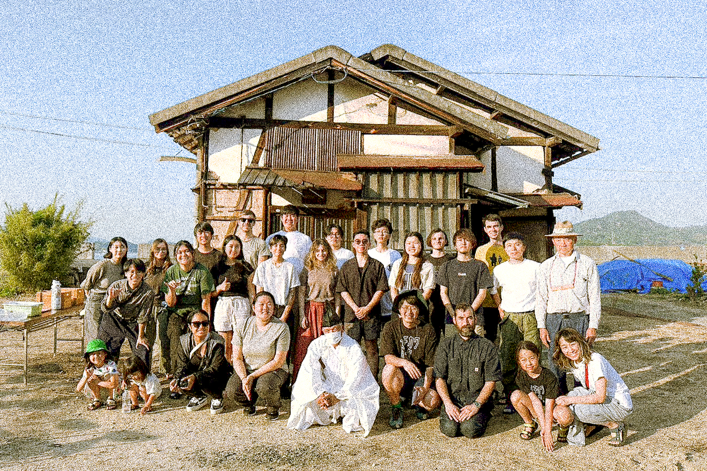

awp_2405_rds_ph
A 1:1 Mikoshi
Special Thanks to: Nao Kono + Bryan Ortega-Welch (instructors), Aleczander Ezra, Connie He, Augustas Jocys, Cheng Zong (team members)
Architecture is perhaps one of the only things running against the current world. As the world is getting faster and faster, with acceleration in the pace we produce and consume media and products, architecture, with its inherent nature, still takes time to design, to assemble, and to use.
The Red Dot School gained rights to deconstruct an abandoned house on Sagishima, a rural island facing population decline. Instead of demolishing the house into a landfill, Red Dot School deliberately chose a different approach, a long-time-span slow-deconstruction that will allow the cataloging and reuse of most of the material that made up the house.
To bring the slowness of architecture’s construction phase into the deconstruction phase is a conscious choice, meant to challenge the default model of real estate development. Demolition of buildings creates enormous amounts of waste, exacerbating our ongoing climate catastrophe. But our default real estate model encourages demolition, for land is an asset that needs immediate reinvestment. What value is exhibited and preserved when we can deconstruct slowly, step by step exposing a building’s structures, and therefore its history?
As we deconstructed this abandoned house, we found evidence of expansions and repairs, pointing to reorganization of the living space in the history of use. The material used for repair also tells the age of the building, older repair materials are more natural-wood-based while the newer materials are more synthetically produced. Most of the structural elements (the beams, the columns) also have joinery- mortise that signals connections to structural elements that are not present in this house. Therefore, these wooden beams and columns must have been reused from previous deconstructed buildings. We could not tell how many times these elements were reused, but we were certain that they deserved care and future reused. To demolish these elements of history into a landfill would be a tragedy.
This is a building of time. We kept a realistic timeline for deconstruction work and understood we could not fully deconstruct this house within 14 days. Thus we left the structure exposed, turning the house into a pavilion that is waiting to be fully deconstructed by the next group of students visiting in 4 months.
It is a 1:1 scale mikoshi (a small portable shrine constructed and carried by the community around town during festivals). It is a sacred space deconstructed through collective labor from all Red Dot School students, instructors, and guests new and old. Instead of moving geographically, this mikoshi instead moves through time. It will sit through the natural weathering of Sagishima’s ocean climate, as well as daily use of the local villagers.

The finished pavilion. The sign sitting in front says “Deconstruction Ceremony.”
 

Gathering of the cohort in front of the abandoned house, before deconstruction began.


Deconstruction begins.


Cataloging of the material, and revealing of the structure.


Decoration of the pavilion with white curtains and red-and-white ropes, to demarcate sacred spaces. The use of white curtains also allows the pavilion to sway with the ocean winds.